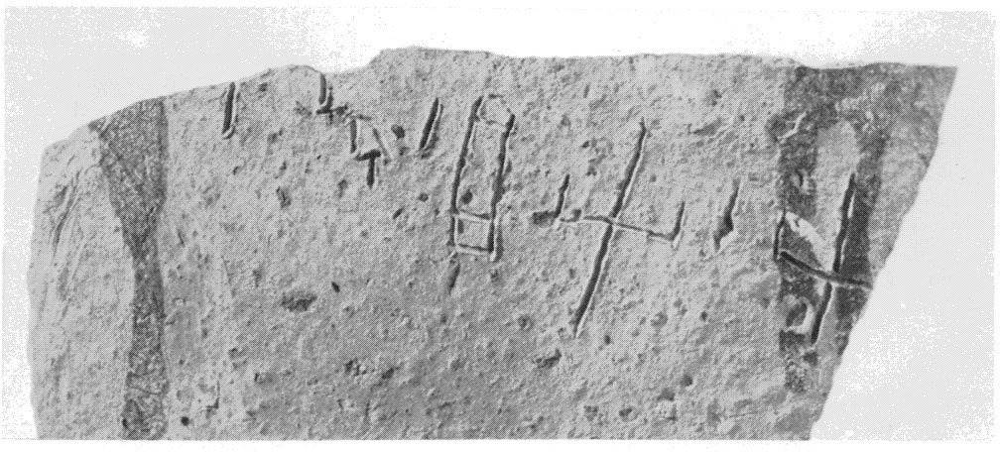
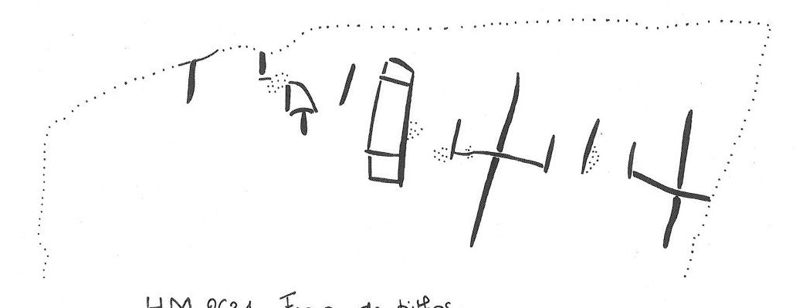

-
KNZb4
Names
KNZb4, KN Zb 4
Support
Clay vessel
Location
Knossos
Findspot
Unavailable


Scribe
Unavailable
Context
Unavailable
Dimensions
Catalogue
Readings
1 1 0 JU none
1 1 1 *900 none
1 1 2 JA none
1 1 2 SI none
1 1 3 *900 none
1 1 4 SI none
𐘶𐄁𐘱𐘤𐄁𐘤
JU*900JASI*900SI
𐘶𐄁𐘱𐘤𐄁𐘤
JU*900JASI*900SI
KN
Zb 4
(HM 2631) (GORILA IV: 75),
pithos sherd (SE Rubbish Heap)
]-
JU
• JA-SI • SI[
Commentary © John Younger
References
papers/GORILA-Vol4.pdf#page=117